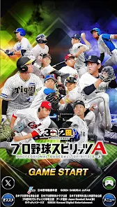

Profile
金子 杏音
Anon Kaneko
東京デザインテクノロジーセンター専門学校 2年
生年月日
2004年6月22日
ニックネーム
あのん
出身地
岩手県滝沢村生まれ福岡育ち
長所
気が使えること
短所
心配性
Favorite
好きなWebサイト
好きなアプリ
プロ野球スピリッツA 
好きな色
青
好きな動物
- 猫科
好き食べ物
レバ刺し、ハツ刺し、もつ煮、パパが作った豚汁
好きな季節
冬
好きな場所
自分の部屋、福岡
好きな言葉
- 人間に生き、人間は堕ちる。そのこと以外に人間を救う便利な近道はない。
- 恋愛は、言葉でもなければ、雰囲気でもない。ただ、すきだ、ということの一つなのだろう。
- あらゆる自由が許された時に、人ははじめて自らの限定とその不自由さに気づくであろう。
- 生きることだけが、大事である、ということ。たったこれだけのことが、わかっていない。本当は、分かるとか、分からんという問題じゃない。生きるか、死ぬか、二つしか、ありやせぬ。おまけに死ぬ方は、ただなくなるだけで、何にもないだけのことじゃないか。生きてみせ、やりぬいてみせ、戦いぬいてみなければならぬ。いつでも、死ねる。そんな、つまらぬことはやるな。いつでも出来るんことなんか、やるもんじゃないよ
坂口安吾
好きな人物
リヴァイ、夏油傑、宮城リョータ、爆豪勝己、キルア、坂口安吾、岡田准一、富樫勇樹、河村勇樹、比江島慎、柳田悠岐、栗原陵矢、周東右京、今宮健太
好きな教科
歴史、体育
好きなスポーツ
バスケ、野球
好きな本（漫画/小説/他）
人間失格、進撃の巨人、フェアリーテイル、スラムダンク、不連続殺人事件、青銅の魔人
好きな映画（ドラマ/アニメ/他）
残響のテロル、ハンターハンター、デュラララ、曇天に笑う、ヘルドッグス、燃えよ剣
好きなゲーム
FF、デビルメイクライ、三國無双、龍が如く、Ghost of Tsushima